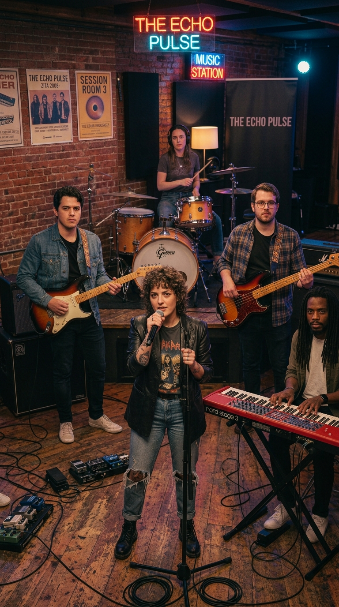
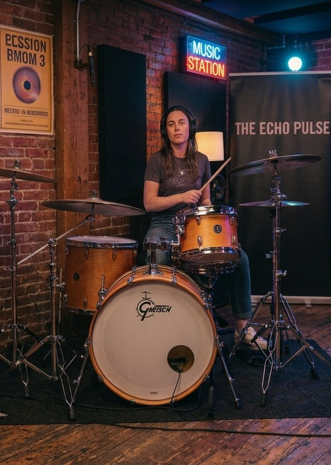
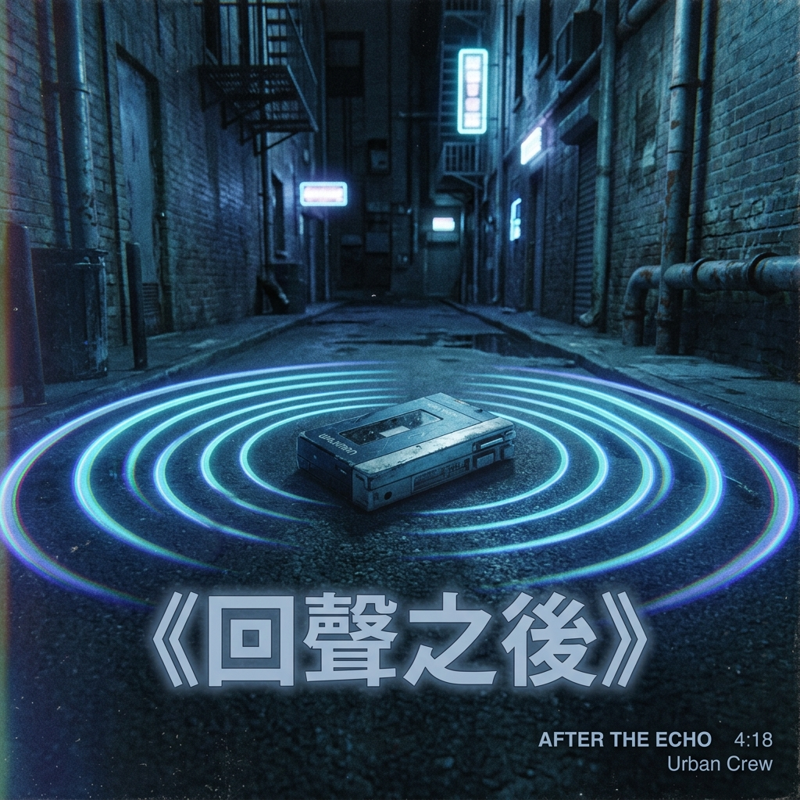

主唱
阿澄
用溫柔而清亮的聲音，唱出每一段城市心事。
2026 現場巡演
全新巡演即將啟程，期待與你在現場相遇。
查看巡演場次OUR STORY

迴響，從幾個朋友深夜排練開始。我們把城市的霓虹、日常的心事，和那些說不出口的想念，寫進旋律裡。
我們相信現場的每一道聲音都能找到聽眾。這一次，帶著新歌與熟悉的節奏出發，期待在下一站與你相遇。
THE BAND
五種聲音，在舞台上各自發光，在音樂裡成為同一個節拍。
主唱
用溫柔而清亮的聲音，唱出每一段城市心事。
吉他
讓流動的和弦，帶大家走進歌曲的風景。

貝斯
以沉穩低音，替每一首歌打下前進的脈搏。
鼓手
用俐落節奏點亮舞台，讓夜晚一路沸騰。
鍵盤
用層層音色，為旋律添上夜色般的想像。
NEW RELEASE
全新單曲首度曝光，將在巡演現場首度完整演出。

最新單曲
城市沉睡後，最深的聲音仍在心裡往前跑。這首歌帶著淡淡的夜色與明亮的旋律，像是告訴你：即使失去方向，仍然能找到回家的路。
2026 LIVE TOUR
把喜歡的歌留到現場，一起唱到夜深。
距離巡演首場
倒數即將開始
01 / NORTH
台北流行音樂中心
入場 18:30 ・ 開演 19:30
02 / SOUTH
高雄流行音樂中心
入場 18:30 ・ 開演 19:30